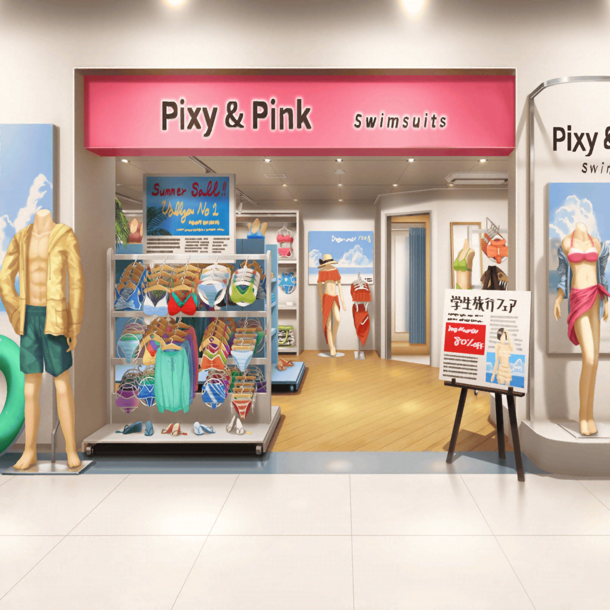

花咲川 通学路
ひまり
む～……
みんな、海に行こうって言ってくれなかった……
ひまり
こうなったら、メンバー以外の誰かを誘って
海に行っちゃうんだから！
ひまり
誰と行こうかなぁ……
あっ！ そうだ、リサ先輩！
ひまり
一緒に出かけたことないし、いい機会かも！
えーっと、連絡先は、っと……あった！
ひまり
あっ、もしもし、リサ先輩～！
今週末って、予定あいてますっ！？

駅前
リサ
はい、もしもし……あれ、ひまりじゃん！ なになに～？
えっ、今週末？ うん、ヒマだけど……
リサ
海ー！ いいねー！ もちろん行くよ～！
それじゃあ、また週末にね♪
リサ
いや～、海か～！ 何年ぶりだろ～！
……あ、まあ……きっと３年ぶり、かな……
リサ
中２以来だよね……
……って、やば！ 水着！！
リサ
さすがに中学時代のやつ、
今着るのはちょっと……ないよね～……
リサ
ふふーん♪ 今日の買いものは、
水着探しに予定変更！
リサ
せっかくだから新しい水着買っちゃうぞ～！
どんなのにしよっかなぁ……
リサ
えーと、水着、今年のトレンドは……っと……
わっ、みんなかわいい♪ 試着して決めよー！！

ショッピングモール カフェ
あこ
あのボス、ほんとキツかったー！
ごめんね、りんりん。あこが足ひっぱっちゃったよね
燐子
ううん……あれ、本当にむずかしいクエスト……だから……
次は、パーティメンバー……増やして……やってみよっか……
あこ
うんっ、ありがと！
次こそぜーったいに、クリアしよっ！
燐子
……うん……一緒に……がんばろう……
あこ
クリアしたら、このカフェで祝杯をあげよう！
……ってことで、ごちそうさまでしたっ！
燐子
ごちそうさま……でした……
おいしかった、ね……
あこ
うんっ！ あこ、ここのケーキ大好き！
じゃ、そろそろ出よっか？
燐子
わたしも……だいすき……
また、来ようね……あこちゃん……
あこ
もちろんっ！
さてとー、このあとはアクセショップに……って、あれ……
あこ
ねえ、りんりん見て！
あそこのショップにいるの……リサ姉かな？
燐子
……本当だ……今井さん……
見てるのは……水着……？
あこ
どうしたんだろ～ねっ。
声かけてみよっ！

ショッピングモール 水着売り場
リサ
この布面積は……
さすがにちょっと攻めすぎだよね～
あこ
ねえねえっ、リサ姉～っ！！
リサ
わっ！ あこ！ 燐子も！
び、びっくりした～！
あこ
えへへっ！ ごめんなさーいっ！
リサ姉、水着買いにきたのっ？
リサ
うん！
実は今週末に、ひまりと海に行く約束してさー
あこ
ひーちゃん！
おねーちゃんと一緒の、Afterglowのメンバーだよねっ
燐子
ベースの……方……ですよね……
リサ
そうそう。そのひまりと海に行くんだ～！
だから水着を探してるってワケ。
持ってるやつ、中学時代のだし……さすがにキツイからね～
あこ
……いいなぁ～、海！
あこも行きたい！
リサ姉、あこも行っちゃだめかなっ！？
リサ
いーじゃん！ 一緒に行こうよ。
あとで、ひまりに言っておくから！
やっぱり海は、みんなの方が楽しいしね♪
あこ
やったーっ！ ありがとリサ姉！
ねっ、りんりんも行こうよ！
燐子
……えっ…………えぇっ……？
燐子
（海……知らない人がたくさん、いる……
それに水着なんて……絶対、ムリ……）
燐子
む……ムリ……ムリです……海、こわい……
あこ
そ、そんなことないよっ！？
きっとすっごい楽しいよっ、りんりん！
燐子
……あこちゃん…………
でも……ムリ、です……わたし、行かない……
あこ
りんりん……
リサ
……ま、燐子にはちょっと早すぎるかもね。
慌てることないって！ 海は逃げないからね☆
あこ
……うんっ！ そうだよね！
それに、海じゃなくてもりんりんとは遊べるもんね！
燐子
……あこ、ちゃん……
リサ
でもま、水着見るのは付き合ってくれてもいーよね？
それじゃーふたりとも！ 試着大会の始まりだーっ！
あこ
おぉーっ！
行こっ、りんりん！ 最強にカッコイイやつ、見つけよっ！
燐子
えっ…………わ、わたしも……？
ま……、待って……あこちゃん……